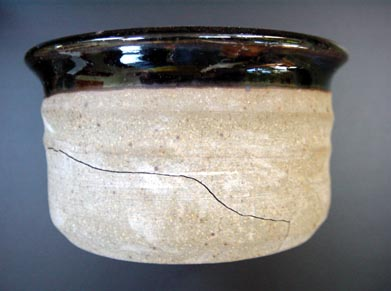

| Economic Factors
and Potters
By Jeff Zamek II
Previous > Time and Labor
So now that we know that potters are on the tail end of the raw
material economy, we should realize it's not likely that potters
ever wag this dog. Instead, the best course of action is to pick
and choose carefully, using "guaranteed" clays and glaze
recipes whenever possible. Trouble-free glazes and clay bodies can
be formulated if potters learn to use their supply and demand strengths,
rather than being discouraged by choosing raw materials blindly.
A little knowledge in these areas will produce better results in
the pottery.
Economic Strategies for Selling Pots
 How
can individual potters hope to overcome high labor cost, inferior
raw materials, and competition from mass-produced functional pottery?
As an added condition potters are faced with all the inherent problems
in financing and running a small business, many of which fail within
the first five years of operation. In order to sell pots in this
type of business environment much depends on a thorough understanding
of the general market and its smaller niche "crafts" markets.
The handmade "one of a kind" ceramic object produced by
a lone craftsman does not have a large market in the United States
as compared with mass produced, low priced, throwaway functional
objects which can be made from metal, plastic, ceramics or paper.
There is a smaller market for handmade ceramic objects, which the
potter must locate and develop in order to sell profitable functional
pottery. How
can individual potters hope to overcome high labor cost, inferior
raw materials, and competition from mass-produced functional pottery?
As an added condition potters are faced with all the inherent problems
in financing and running a small business, many of which fail within
the first five years of operation. In order to sell pots in this
type of business environment much depends on a thorough understanding
of the general market and its smaller niche "crafts" markets.
The handmade "one of a kind" ceramic object produced by
a lone craftsman does not have a large market in the United States
as compared with mass produced, low priced, throwaway functional
objects which can be made from metal, plastic, ceramics or paper.
There is a smaller market for handmade ceramic objects, which the
potter must locate and develop in order to sell profitable functional
pottery.
There are several strategies that can work to reduce cost and increase
profit margins. There are also several approaches to selling pottery
to small specialized markets. Many potters compile a list of customers
who have purchased their work in the past. A "fine tuned"
mailing list of satisfied customers can be used to send out postcards
and notices for upcoming shows and sales. Since the list is composed
of customers who have purchased work in the past they are more likely
to do so in the future. Many customers "collect" a potters
work over time and look for new pots to buy in the future. If it
is possible to have past and potential customers arrive at the pottery
studio for a kiln opening so much the better as this technique eliminates
shipping and handling costs for the potter. There is nothing more
satisfying for the potter than having someone take the pots out
of the studio and leave money in their place. Potters should realize
this economic fact: the more you touch the pots, the more they cost
to make.
Craft shows which are held in many locations throughout the country
attract a wide ready made willing to buy audience of self selected
customers as they are purposely looking to buy hand made objects.
However, potters can fall into the trap of under pricing their pots
to people who are more than willing to buy them. What such a situation
provides is many labor intensively made pots selling at low profit
margins. There are many reasons for a miscalculation in determining
the fixed and variable costs in producing pottery. One factor is
the potters reluctance to not price their work out of the market.
They have not determined where their pricing falls on the supply
and demand curve. More importantly they have not availed themselves
of the potential increased profit margins because they worry an
over priced item will not sell.
When potters devise a multi-tiered pricing policy on a specific
line of pots they can possibly increase their profit margin while
not giving up a sale. For example, the potter can make a casserole
selling for $25.00 and another slightly modified casserole priced
at $35.00. In this way the potter can test the market for a higher
priced item while still giving the potential customer an opportunity
to buy a pot. It is frequently noted customers need an excuse to
buy and they need an excuse not to buy. By using an adaptable scale
pricing structure the customer is always left with an option to
buy the lower priced casserole.

A deceptive characteristic of selling handmade pottery is the low
barrier to entry when starting a business. The costs of capital
equipment, supplies, and raw materials are small expenditures compared
to the time and labor involved in making the actual pots. Many potters
find at first they can easily sell their work to friends and relatives.
This selective group of "customers" is always very supportive
with words of encouragement, often placing orders for new pots.
At this stage potters often expand their potential market to craft
shows which can bring in added revenues; however, if the potter
has not carefully calculated his costs he could be working for a
few cents per hour. The potter also has to compete against other
potters who have mistakenly priced their pots too low. The next
stage of making pottery revolves around starting a small business
and not simply just turning out more pots. It is often at this higher
level of business activity that potters are unable to run a business.
Many pottery businesses, as with the majority of small businesses,
fail within a short period of time. A more insidious development
can occur when potters sell their pots over several years and suffer
incremental cost increases in the production. At the end of many
long months and years of manual labor (making pots) they find themselves
making less money each year. This situation can be intensified if
the potter is selling a greater quantity of pots that are not priced
accurately. Higher production costs at increased volume of sales
can equal lower net profits. A pottery business can slowly fail
when there is a low or negative profit margin on some items that
are sold in high volumes.
Researching the business operations of other potters and a survey
of the potential market would be the first steps in starting a pottery
business. Learning from other people's mistakes is less expensive
than learning from your own mistakes. A business education can be
a major benefit when starting any small business enterprise. Many
community colleges offer business courses in advertising, bookkeeping,
and marketing. The potter should take advantage of any educational
opportunities and apply the concepts and skills before starting
their own pottery business. While business skills will not directly
translate into making better pots, they will increase the chances
of the potter remaining in business so better pots can be made.
Acknowledgements:
I would like to thank Dan Belleville, of Mid-Town Motors, 151 College
Highway, Southampton, MA 01073 ph 413 527 4248 for his detailed
information on spark plugs.
Jim Fineman contributed valuable technical information to the article.
Jim is a professional potter living in Manteo, NC.
Jeff Zamek, received B.F.A./M.F.A. degrees in ceramics from, Alfred
University, College of Ceramics, NY. He taught ceramics at Simon's
Rock College, Great Barrington, MA. and Keane College, Elizabeth,
NJ. In 1980 he started his own ceramics consulting firm and has
contributed articles to Ceramics Monthly, Pottery Making Illustrated,
Clay Times, Studio Potter, and Craft Horizons. His books "What
Every Pottery Should Know" $ 31.40 and "Safety in the
Ceramics Studio" $ 25.95 are available from, Jeff Zamek/Ceramics
Consulting Services, 6 Glendale Woods Dr., Southampton, MA 01073
web page http://www.fixpots.com,
email: FIXPOTS@aol.com.
I would like to thank Jeff Zamek for making this important article
available to Ceramics Today.
Previous > Time and Labor
More Articles
|